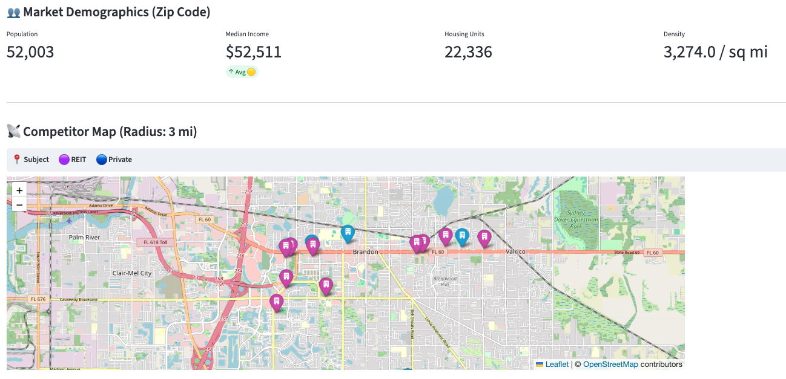
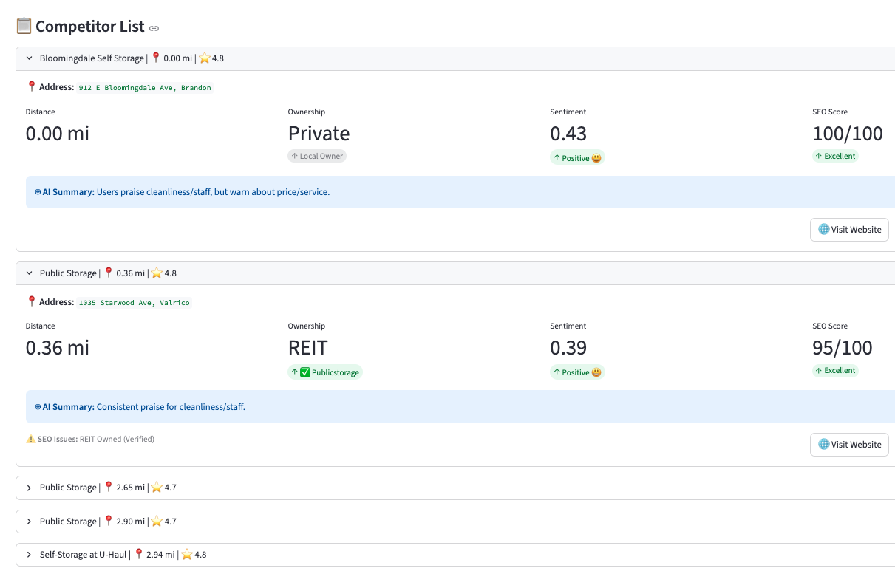

What the app does & why I decided to create it
I wanted to see — just by using a property address, what kind of information I could pull into a web app that would be useful for assessing competitors in the market.
Plus, I thought it would be a fun challenge to build a tool that uses Machine Learning, APIs, etc. as I continue to learn about these systems/technologies and various use cases.
In short, the app does the following:
- 1. Retrieves images of the property (street view & aerial)
- 2. Pulls in demographic data (zip code)
- 3. Creates a map with pins of nearby competitors
- 4. Creates a list of competitors with distances, SEO ranking, customer sentiment and more
So, how does this work?
Machine Learning
- First TensorFlow/Keras models were pre-trained with self storage imagery (street view and aerial views for Class A, B, C properties).
- The python script retrieves the subject property address then processes the photos.
- The model outputs the Class and displays a % confidence.

Street view images are hit and miss and often have vehicles/off angles so it's hard to really train the model well on this view. The aerials are much better but still there are some limitations depending on Class B/C properties and the subtle differences from the aerial imagery.
Web Scraping / SEO check
- For each competitor URL there is a HTTP GET request made and the script uses BeautifulSoup library to check for basic SEO elements.
- 1. Page title
- 2. Meta description
- 3. Mobile viewport tag
This can be challenging with REIT websites (Extra Space, Public Storage etc) given the anti-scraping features and dynamically loaded content. So the default if it is a REIT property, there is a high SEO score given.

Google APIs (Geocode & Places)
- Geocoding API converts the subject property address into latitude and longitude coordinates, enabling accurate mapping and spatial analysis.
- Google Places API is used to automatically identify nearby self-storage competitors, pull location details, website URLs, and customer reviews.
AI & Natural Language Processing (Customer Sentiment)
- Customer reviews pulled from Google are analyzed using natural language processing NLP to estimate overall sentiment.
- Reviews are scanned for common themes (pricing, cleanliness, staff behavior, access, etc.), and a concise summary of customer perception is generated.
